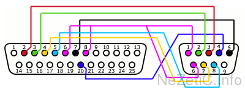
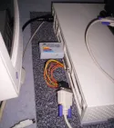

DB25/DB9 adapter for serial links
Introduction
Sometimes certain machines, such as some SUN workstations for example, do not have serial connectors in male DB9 format, but in DB25 format.
This is a problem, because DB9/DB25 cables are not necessarily easy to find at a good price.
There are a few articles on the net explaining how to make such a cable yourself (see for example the very good article by Sunwizard), but wouldn’t it be wiser to make a simple adapter allowing the use of a good old standard serial cable (in DB9, therefore) that many of you already own.
That is what I propose to build here, very simply.
Build
To make your adapter, you will only need 2 connectors, in DB9 and DB25 format respectively. They are very easy to find in any electronics store, or can be ordered by mail for a pittance.
Add a soldering iron, and some electrical wire (or wires, of different colours, it will be easier).On the diagram shown here, it is the outer faces of the connectors that you see. The numbering corresponds to this external view: on the soldering side, it is reversed.

DB 25 DB 9 2 3 3 2 4 7 5 8 6 and 8 1 and 6 7 5 20 4 Once soldered, check carefully that there are no wiring errors, nor wire ends in contact when they should not be connected. It is advisable to use a multimeter, even a home-made one, a 4.5 V battery and a small bulb being enough to test the connections.
Warning: do not strip your wires over too great a length to solder them, this could facilitate short circuits in use.

Example (opposite): Serial connection between a SparcStation 1 and an Armada M300 under FreeBSD.You can of course finish the assembly by integrating it into a small case, which avoids handling the link wires too much at the risk of unsoldering them.
by Cédric TESSIER on
{kind=link}